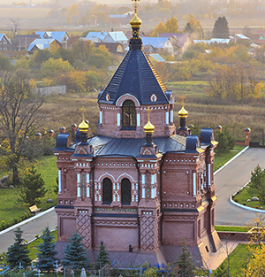

В древней форме (употребительной в устной речи и по сей день) — Володимѣрь[4] — княжеское имя Володимѣръ[4] сочетается с притяжательным суффиксом -јь-, то есть «город Владимира». Топонимы на -јь- — это наиболее древние типы, характерные для названий славянских городов. С течением времени название города сначала по звучанию, а затем и по написанию совпало с личным именем Владимир. В прошлом употреблялись также варианты Владимир-на-Клязьме и Владимир-Залесский, что было связано с существованием одноимённого города в Юго-Западной Руси — это Владимир-Волынский на современной Украине, в Волынской области.
